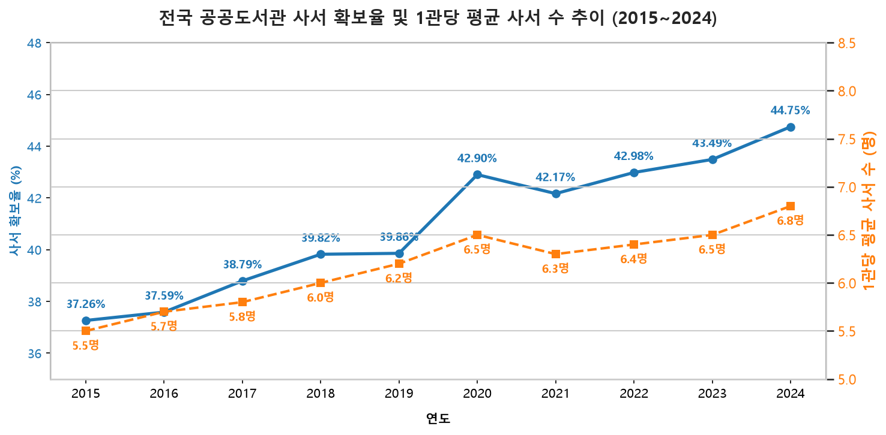

📊 10개년 통계 시각화 전시실
지표 탭을 선택하면 고해상도 통계 추이 및 국제 비교 데이터를 상세하게 탐색할 수 있습니다.

도서관 인프라의 증대와 함께 전체 사서 자격증 보유자도 꾸준히 증가하여, 관당 배치 사서 수는 5.5명에서 6.8명으로 증가했습니다.
🗄️ 도서관 통계 캐비닛 (지역별 이상 수치 분석)
통계 수치 중 유독 높거나 낮아 비정상적인 분포를 보이는 지역 카드를 클릭하여 문헌정보학적 배경 원인을 확인해 보세요.
세종특별자치시
행정중심복합도시 건설에 따른 정책적 인력 이식
2015년 출범 초기 세종시는 사서 단 9명의 소규모 구조였습니다. 지난 10년간 대형 복합커뮤니티센터와 시립도서관이 연달아 신설되며 기저효과(분모가 작음)와 공공 계획이 맞물려 수치가 폭증하였습니다.
대전광역시
모바일 상생 공동 대출망 기반의 이용 활성화
대전은 사서 1인당 업무 부담이 비정상적으로 높게 산출됩니다. 이는 대전시 전역의 공공도서관 대출망을 일찍이 고도화하고 모바일 기반 상호대차 서비스 시스템을 선제 구축하여 대민 대출 접근 장벽을 대폭 허물었기 때문입니다.
울산광역시
공공도서관 인프라 결핍에 따른 과밀 현상
울산은 인구 110만 명 규모의 광역시이나 공공도서관 수는 21개관에 불과합니다. 광주(30개관), 대전(26개관) 대비 인프라가 턱없이 부족하여 개별 도서관의 이용 밀도가 기형적으로 솟구치며 사서 1인의 방문객 응대 과부하를 초래하고 있습니다.
전라남도
인력 충원 정체와 누적 도서 장서의 장기 부조화
전남은 사서 확보율이 전국 최하위(32.88%)로 정체된 반면, 77개 도서관의 책은 계속 쌓이고 있습니다. 오래된 노후 도서를 폐기하고 정리하는 '불용도서 제본 및 폐기 작업'을 도맡아 할 전문 사서가 부족해 장서 관리 의무가 기형적으로 과적되고 있습니다.
🧮 글로벌 기준 사서 인력 진단 계산기
원하시는 지자체를 선택하고 국가별 글로벌 스탠다드를 지정하여, 현장의 적정 충원 필요 인원을 실시간으로 산출해 보세요.
📋 지자체별 분석 지표 아카이브
요약된 분석 통계표입니다. 행에 마우스 커서를 올리면 해당 지자체의 특성이 하단 카드에 노출됩니다.
| 순위 | 지역 | 도서관수 | 전체직원수 | 사서수 | 사서확보율 | 사서 1인당 서비스 인구 |
|---|---|---|---|---|---|---|
| 1 | 세종 | 16 | 151 | 97 | 64.24% | 4,028명 |
| 2 | 서울 | 212 | 3,335.5 | 2,085 | 62.51% | 4,476명 |
| 3 | 부산 | 56 | 921 | 559 | 60.69% | 5,844명 |
| 4 | 대구 | 49 | 617.5 | 372 | 60.24% | 6,354명 |
| 5 | 경남 | 79 | 1,326 | 617 | 46.53% | 5,232명 |
| - | ... | - | - | - | - | - |
| 13 | 강원 | 69 | 712.5 | 265 | 37.19% | 5,727명 |
| 14 | 광주 | 30 | 548.5 | 195 | 35.55% | 7,223명 |
| 15 | 충북 | 56 | 665 | 233 | 35.04% | 6,829명 |
| 16 | 전북 | 67 | 853 | 297 | 34.82% | 5,854명 |
| 17 | 전남 | 77 | 946 | 311 | 32.88% | 5,752명 |